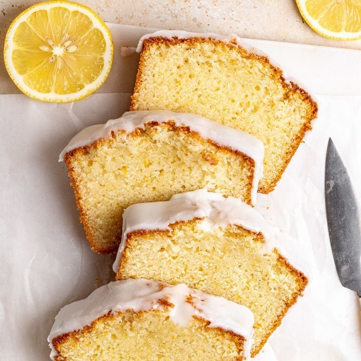

Welcome to Easy Baking by Sara! Here you can find my favorite recipes, tips, and tricks for baking delicious treats from scratch. My goal is to make baking fun and easy for everyone.

Recipe of the Month - Juicy Lemon Loaf
A recipe perfect for all seasons! This moist lemon loaf is an all-time favorite of mine! Easy to make, delicious and so good you can't believe it's this easy to make.
View The Featured RecipeSeasonal Baking tip: When making brownies, chocholate cake or chocholtate chip cookies, add a small pinch of ground coffe to the batter, for a deeper more mature flavor.
Consider listening to this cozy Jazz music. Perfect for relaxing and baking!